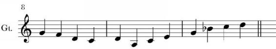
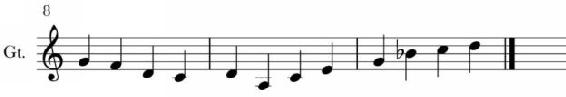

A staff is divided horizontally into bars (or measures), which are units of rhythm that allow the music to be divided evenly and counted. Unless the time signature has been changed, each bar contains the same amount of rhythmic material, and if neither the time signature nor the tempo is changed, then each bar takes up the same amount of time.
In general, bars are divided by vertical lines moving across the horizontal lines of the staff. There are, however, more ways than one that this is done.
Each composition is made up of a particular number of bars which are usually numbered in numerical order. This makes it easier to refer to them later. Bar number is usually written right at beginning of the staff above the clef (see figure 1.12.1.).
Standard bar lines are single, light lines that divide one bar from another within the same section of a piece of music. These are far and away the most common bar lines.

Figure 1.12.1. Note the double bar lines at the end of the tenth bar (the third bar pictured)
Double bar lines are used to divide sections of a piece from each other. In addition to marking the end of one bar and the beginning of another, they perform the function of marking the end of one section of the musical piece and the beginning of a new section.

Figure 1.12.2. Note the heavy bar lines at the end of the tenth bar.
Heavy double bar lines are used to end a piece of music. These mark not only the end of a bar and of a section but also the end of a composition.